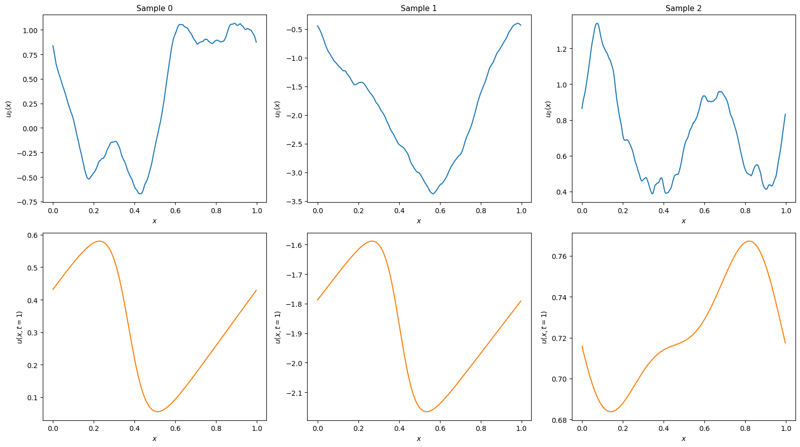

Generating training data for Burgers' equation in 1D¶
This example demonstrates how to generate training data for a neural operator to predict solutions of Burgers' equation in 1D. The data is generated according to the method described in Li, Zongyi, et al. "Fourier neural operator for parametric partial differential equations." arXiv preprint arXiv:2010.08895 (2020).
Users that just want to run a script without reading
this tutorial can check out examples/burgers1d/generate.py on
GitHub.
Note: This tutorial requires users to have pyarrow and
pardax installed.
Problem statement¶
The 1D viscous Burgers' equation on a periodic domain \(x \in [0, 1)\) reads
where \(\nu > 0\) is the kinematic viscosity. The task is to generate input-output pairs \(u_0(x) = u(x, t=0)\) and \(u(x, t=1)\), where the initial conditions are drawn from a Gaussian random field:
where \(\Delta\) is the Laplacian.
Setup¶
import json
import math
import pathlib
import equinox as eqx
import jax
import jax.numpy as jnp
import numpy as np
import pardax as pdx
import pyarrow as pa
import pyarrow.parquet as pq
nu = 0.02 # Kinematic viscosity
L = 1.0 # Domain length
resolution = 256 # Number of grid points
dx = L / resolution # Grid spacing
x = np.linspace(0, L, num=resolution, endpoint=False) # Grid points
Initial conditions¶
Initial conditions are sampled from a Gaussian random field. In Fourier space, the Laplacian is diagonal with eigenvalues \(-k^2\), where \(k\) is the wavevector.
class GaussianField1D(eqx.Module):
"""Sample 1D fields from N(0, 625(-Δ + 25I)^{-2}) on a periodic grid."""
coef: jax.Array
k: jax.Array
n: int
L: float
def __init__(self, n: int, L: float) -> None:
self.n = n
self.L = L
k = 2 * jnp.pi * jnp.fft.fftfreq(n, d=L / n)
self.k = k
self.coef = jnp.sqrt(625 * (k**2 + 25) ** (-2))
def sample(self, key: jax.Array) -> jax.Array:
n = self.n
coef = self.coef
key_dc, key_re, key_im, key_nyq = jax.random.split(key, 4)
dc = jax.random.normal(key_dc, (1,))
m = (n - 1) // 2
re_int = jax.random.normal(key_re, (m,))
im_int = jax.random.normal(key_im, (m,))
interior_modes = (re_int + 1j * im_int) / jnp.sqrt(2.0)
if n % 2 == 0:
nyquist = jax.random.normal(key_nyq, (1,))
pos = jnp.concatenate([dc, interior_modes, nyquist])
else:
pos = jnp.concatenate([dc, interior_modes])
neg = jnp.conj(jnp.flip(pos[1 : m + 1]))
noise = jnp.concatenate([pos, neg])
f_k = coef * noise
f_x = jnp.fft.ifft(f_k) * n
return jnp.real(f_x)
Set up the random field sampler and a batched sampling function:
num_samples = 1280
batch_size = 64
key = jax.random.key(0)
grf = GaussianField1D(resolution, L)
sample_batch = jax.vmap(jax.jit(lambda key_: grf.sample(key_)))
Numerical solver¶
The spatial derivatives are discretised using second-order accurate central differences.
The advection and diffusion right-hand sides are defined as:
def advection(t: float, u: jax.Array, params: dict) -> jax.Array:
"""-u * du/dx (periodic, central differences)."""
dx = params["dx"]
dudx = (jnp.roll(u, -1) - jnp.roll(u, 1)) / (2 * dx)
return -u * dudx
def diffusion(t: float, u: jax.Array, params: dict) -> jax.Array:
"""nu * d²u/dx² (periodic, central differences)."""
nu, dx = params["nu"], params["dx"]
return nu * (jnp.roll(u, -1) - 2 * u + jnp.roll(u, 1)) / dx**2
The solution is advanced through time with an implicit-explicit (IMEX) scheme. The advective term is advanced with a fourth-order Runge-Kutta (RK4) method and the diffusive term is advanced with a backward Euler method.
The linear system resulting from the discretisation of the diffusive term is diagonalised in Fourier space using the eigenvalues \(\sigma_k\) of the second-order central difference stencil on a periodic grid, where
The implicit system at each time step reduces to a pointwise division in frequency space rather than a full linear solve.
k = 2 * jnp.pi * jnp.fft.rfftfreq(resolution, d=dx)
sigma = -4 * nu * jnp.sin(k * dx / 2) ** 2 / dx**2
operator = pdx.SpectralOperator(eigvals=sigma)
spectral_solver = pdx.SpectralSolver(
forward=jnp.fft.rfft,
backward=lambda x: jnp.fft.irfft(x, n=resolution),
)
root_finder = pdx.LinearRootFinder(
linsolver=spectral_solver,
operator=operator
)
explicit = pdx.RK4()
implicit = pdx.BackwardEuler(root_finder=root_finder)
params = {"nu": nu, "dx": dx}
step_size = 1e-4
t_span = (0.0, 1.0)
num_steps = math.ceil((t_span[1] - t_span[0]) / step_size)
step_size = jnp.asarray((t_span[1] - t_span[0]) / num_steps)
def imex_step(carry, _):
t, y, explicit, implicit = carry
y_star, explicit = explicit(advection, t, y, step_size, params)
y_new, implicit = implicit(diffusion, t, y_star, step_size, params)
return (t + step_size, y_new, explicit, implicit), None
@jax.jit
def solve(y0):
carry, _ = jax.lax.scan(
imex_step, (t_span[0], y0, explicit, implicit), length=num_steps
)
return carry[1]
solve_batch = jax.vmap(solve)
For further details on numerical time integration in JAX, check out pardax or diffrax.
Solving the PDE¶
Solve and visualise a few samples to confirm the setup looks right:
import matplotlib.pyplot as plt
num_examples = 3
key, subkey = jax.random.split(key)
preview_keys = jax.random.split(subkey, num_examples)
y0_preview = sample_batch(preview_keys)
y_end_preview = solve_batch(y0_preview)
fig, axes = plt.subplots(2, num_examples, figsize=(16, 9), layout="tight")
for i in range(num_examples):
axes[0, i].plot(x, y0_preview[i], color='C0')
axes[0, i].set_xlabel("$x$", fontsize=10)
axes[0, i].set_ylabel("$u_0(x)$", fontsize=10)
axes[0, i].set_title(f"Sample {i}", fontsize=11)
axes[1, i].plot(x, y_end_preview[i], color='C1')
axes[1, i].set_xlabel("$x$", fontsize=10)
axes[1, i].set_ylabel("$u(x, t=1)$", fontsize=10)
plt.show()

Generating and saving the dataset¶
Rather than solving for all samples at once, we generate and write in batches
to keep peak memory usage bounded. Each batch is appended to a Parquet file
with columns sample_id, x, u0, and u_end. The dataset is saved as a
directory containing data.parquet and a metadata.json sidecar.
dtype = np.float32
pa_float = pa.from_numpy_dtype(dtype)
schema = pa.schema(
[
pa.field("sample_id", pa.int64()),
pa.field("x", pa.list_(pa_float)),
pa.field("u0", pa.list_(pa_float)),
pa.field("u_end", pa.list_(pa_float)),
]
)
dataset_dir = pathlib.Path("myburgersdataset")
dataset_dir.mkdir(parents=True, exist_ok=True)
with pq.ParquetWriter(
dataset_dir / "data.parquet", schema, compression="snappy"
) as writer:
for start in range(0, num_samples, batch_size):
end = min(start + batch_size, num_samples)
batch = end - start
key, subkey = jax.random.split(key)
batch_keys = jax.random.split(subkey, batch)
y0 = sample_batch(batch_keys) # (batch, resolution)
y_end = solve_batch(y0) # (batch, resolution)
y0_np = np.asarray(y0, dtype=dtype)
y_end_np = np.asarray(y_end, dtype=dtype)
sample_ids = np.arange(start, end, dtype=np.int64)
# PyArrow list columns are stored as a flat values buffer plus an
# offsets array where offsets[i] is the start of row i, so row i
# spans flat_values[offsets[i]:offsets[i+1]].
offsets = np.arange(
0, (batch + 1) * resolution, resolution, dtype=np.int32
)
rb = pa.RecordBatch.from_arrays(
[
pa.array(sample_ids, type=pa.int64()),
pa.ListArray.from_arrays(
pa.array(offsets, type=pa.int32()),
pa.array(np.tile(x, batch), type=pa_float),
),
pa.ListArray.from_arrays(
pa.array(offsets, type=pa.int32()),
pa.array(y0_np.flatten(), type=pa_float),
),
pa.ListArray.from_arrays(
pa.array(offsets, type=pa.int32()),
pa.array(y_end_np.flatten(), type=pa_float),
),
],
schema=schema,
)
writer.write_batch(rb)
print(f" {end}/{num_samples} samples generated")
metadata = {
"nu": nu,
"dt": float(step_size),
"t_end": 1.0,
"resolution": resolution,
"L": L,
"seed": 0,
"num_samples": num_samples,
"dtype": "float32",
}
with open(dataset_dir / "metadata.json", "w") as f:
json.dump(metadata, f, indent=2)
print(f"Dataset saved to {dataset_dir}")
64/1280 samples generated
128/1280 samples generated
192/1280 samples generated
...
1216/1280 samples generated
1280/1280 samples generated
Dataset saved to myburgersdataset